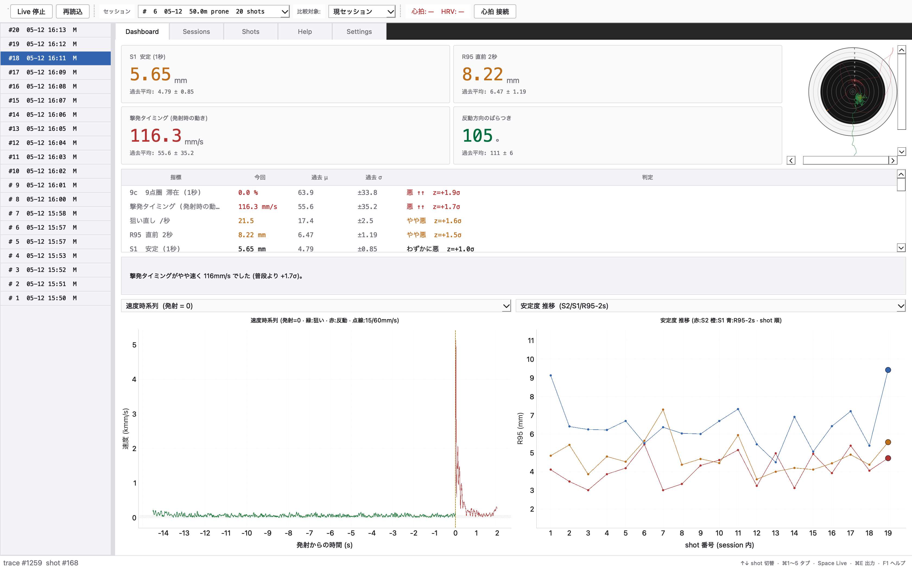
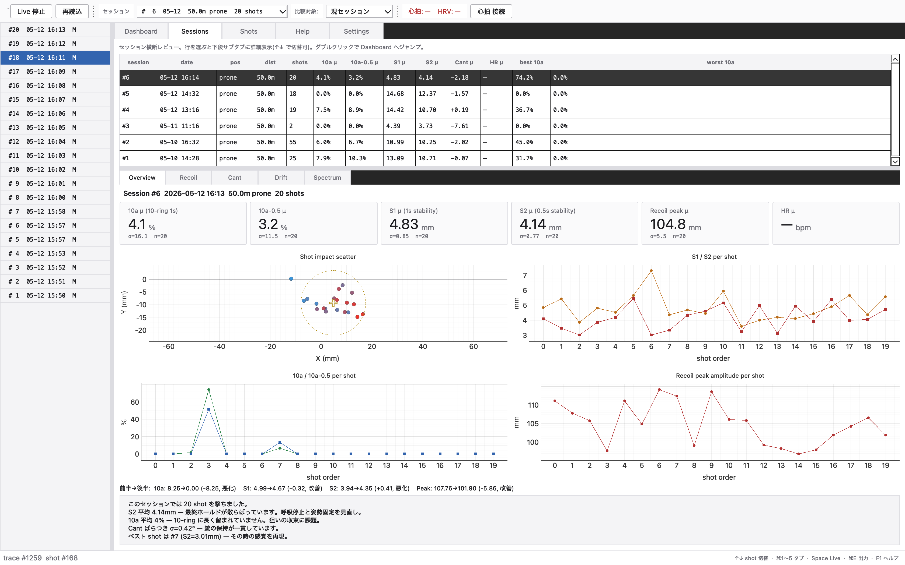
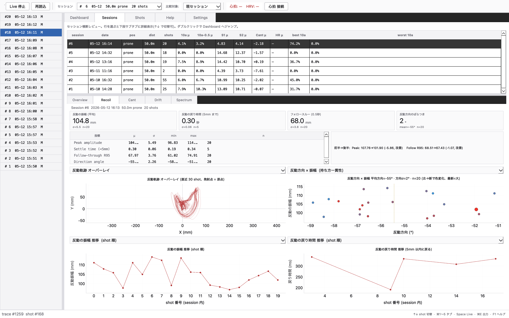
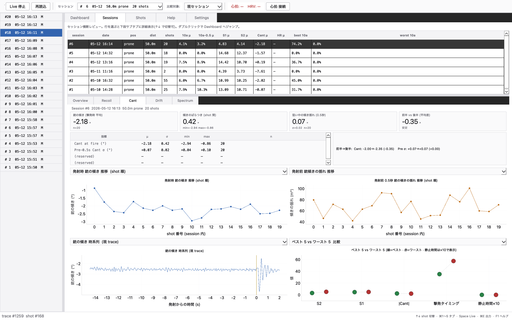
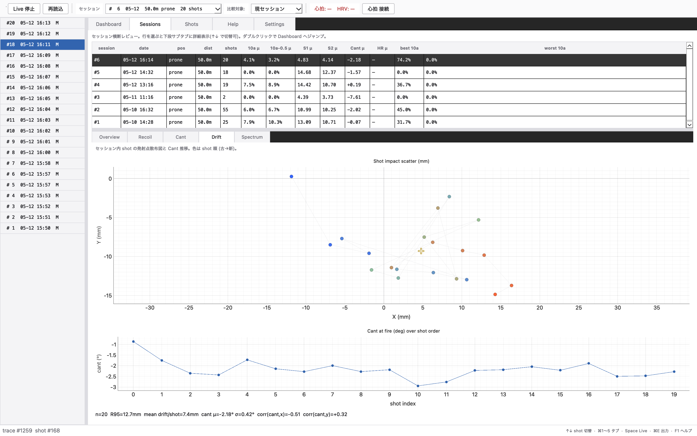
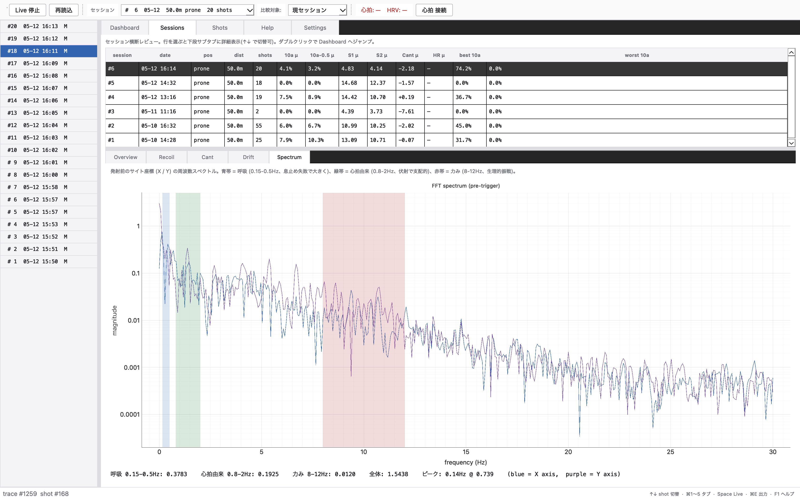
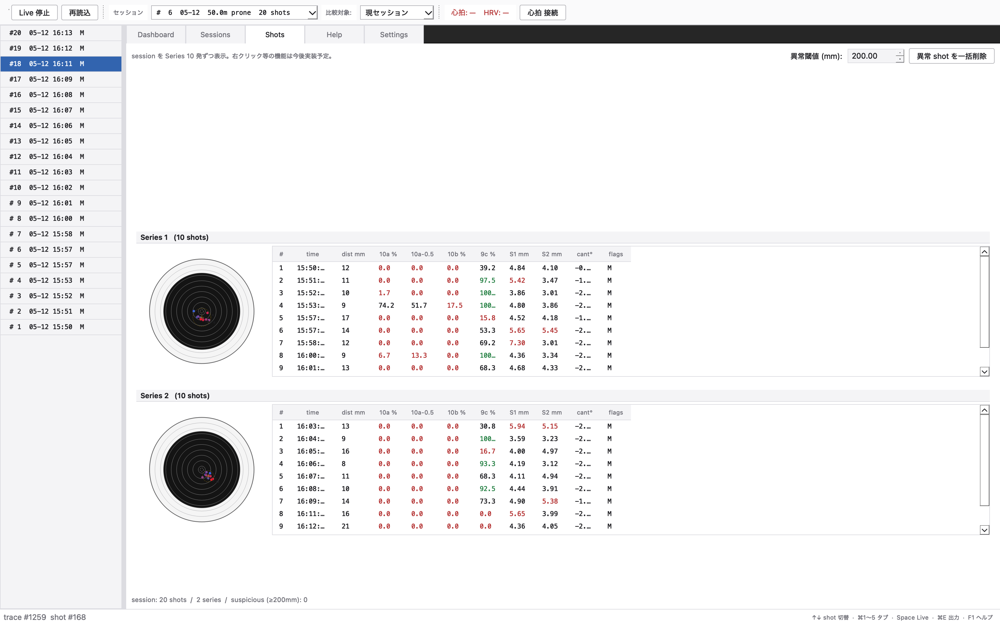

本家互換指標
10a / 10a-0.5 / 10b / 9c / S1 / S2 を SCATT と同じ命名で表示。本家の数字を見慣れた人もそのまま使える。
本家にない手のふるえ・呼吸 FFT、反動詳細、銃の傾き統計、心拍 / HRV、自然言語フィードバック。
50m ライフル / 10m エアライフル / 10m エアピストルに対応。ローカル動作・オフライン完結。
SCATT Electronics 公式ではありません。Apache License 2.0。

SCATT Expert はターゲット軌跡やスコアを表示するが、伏射競技者が知りたい 「最終 0.5 秒の安定度」「手のふるえの周波数」「反動の振幅と方向」「心拍の影響」 といった補助情報は分散していたり、出ていなかったりする。
本ソフトは SCATT の storage.dat をローカルで読み取り、
SCATT が出していない指標を中心に、
個人の過去 shot との z-score 比較と
自然言語コメントで振り返りやすくする。
10a / 10a-0.5 / 10b / 9c / S1 / S2 を SCATT と同じ命名で表示。本家の数字を見慣れた人もそのまま使える。
過去 shot の μ / σ から偏差を計算、悪い順にソート + 色付け。「今回特にダメだった指標」が一目で分かる。
pre-trigger の X/Y を 8–12Hz の手のふるえ帯と 0.15–0.5Hz の呼吸帯に分けて周波数解析。
peak 振幅、settle time、フォロースルー R95、反動方向の円形 σ。発射後 1 秒を細かく見る。
Apple Watch + HeartCast や胸ベルト (Polar H10 等) から BLE Heart Rate Profile を受信。発射時 HR と 30 秒 RMSSD を shot に紐付け。
ネット不要・LLM なしで動作。「呼吸帯が顕著に大きい」「後半 S2 が +12mm 悪化」のような所見を ローカル完結で生成。
過去全セッションを一覧、ベスト/ワースト、前半 vs 後半トレンド比較。Series 10 発ごとに本家風ブロック表示。
発射点 200mm 以上 (誤反応) を SCATT 側 DB ごと物理削除。閾値は調整可能。
pandas / Excel / R で解析するための shot 単位エクスポート。セッション単位の PDF レポート出力もあり。
50m ライフル / 10m エアライフル / 10m エアピストルを Settings から切替。ターゲット幾何と 10a/10b/9c の判定半径が ISSF 仕様に追従。
心拍記録と設定を 1 つの zip にまとめて書き出し。別 Mac への移行や PC 入替時に 1 クリックで復元。
クラウド送信なし、API キー不要。すべての処理は手元の Mac で完結する。データの所有権は自分のまま。
主役 4 KPI(10a / 10a-0.5 / S1 / S2)+ 全指標表(z-score 悪い順) + ローカル NLG フィードバック + 自由に選べるグラフ枠 + ISSF ターゲット内蔵。射手好みに KPI 4 枠を 24 指標から組み換え可能。
セッション一覧 + 選択行の集計。R95 / S2 / 反動 peak amplitude を shot 順に並べて、調子の山谷が一目で見える。

反動 peak / settle time / fall-through / direction を shot ごとに分析。オーバーレイ表示で「同じセッション内の反動の散らばり」が分かる。

射撃中の銃身傾きと、発射直前 1 秒の変化を時系列で。ベスト/ワースト shot の比較表示にも対応。

shot ごとの平均 drift を散布図で。Cant とのコリレーション値も併記。

pre-trigger の FFT パワースペクトル。呼吸 (青 0.15-0.5Hz)、心拍由来 (緑 0.8-2Hz)、力み (赤 8-12Hz) 帯域でハイライト。

session 内 shot を 10 発 Series ごとにブロック化。各 Series にターゲット + 弾着 + 集計テーブル + μ 行が付く本家風表示。Series 単位の PDF 出力にも対応。

射撃種目、Live polling、各種閾値、ダッシュボードのレイアウト、心拍計、バックアップ / 復元、更新確認をここから操作。
scatt-prone-analyzer-0.3.0.dmg (約 150MB)
SCATT Prone Analyzer.app を Applications フォルダにドラッグ署名は ad-hoc(Apple Developer Program 未加入のため公証なし)。気になる場合は方法 B のソースビルドが選べます。
# 前提: macOS, Homebrew, Python 3.10+
brew install python@3.10
git clone https://github.com/KaiTabata/scatt-analyzer.git
cd scatt-analyzer
make install # PyQt6, numpy, pyqtgraph, bleak をインストール
make gui # GUI 起動 (Finder からは scatt-gui.command をダブルクリックでも可)
make test # pytest で単体テスト~/Library/Application Support/SCATT Electronics/Scatt Expert/storage.dat が存在することSCATT Expert の trace.data BLOB を独自リバースで完全復号:
sessions.sample_rate(典型 120Hz)→ 詳細な解説ページ で 4 段階の復号手順 / XOR 鍵の抽出方法 / Python 実装の全文を公開している。
本ソフトは storage.dat を読み取るのと、明示的な操作で 異常 shot の削除(DELETE FROM shots)を行う。書き込み内容はそれ以外にない。
SCATT が保存しない補助データ(心拍 / HRV / 将来の IMU)は別 SQLite (~/Library/Application Support/scatt-prone-analyzer/extra.db)に保存する。
いいえ。SCATT が保存した自分の射撃データをローカルで読み取って解析する、非公式の補助ツールです。
基本は read-only。明示的に「異常 shot を一括削除」ボタンを押した時だけ、SCATT 側 DB の shots / traces 行を物理削除します。確認ダイアログあり、取消不可。
使えます。read-only モード + busy_timeout で、SCATT の書き込みと並行して読み出せる設計。動作中のセッションも自動追随します。
機能としては動きますが、現在の閾値感(R95 良/悪、HOLD time 等)は伏射前提のチューニング。閾値は Settings タブで調整できます。
v0.3.0 から 10m エアライフルと10m エアピストルに対応。Settings の「射撃種目」から切替、ターゲット幾何と 10a/10b/9c の判定半径が ISSF 公式仕様に追従します。
本体の Python コードはマルチプラットフォームですが、検証は macOS のみ。caffeinate や Launcher (.command) は macOS 専用です。Windows 対応は今のところ予定なし。
Watch + iPhone に HeartCast 等の BLE Heart Rate Profile ブロードキャストアプリを入れ、iPhone から放送 → Mac で bleak 経由で受信。胸ベルト (Polar H10 等) も同じインターフェースで動きます。
SCATT 本体のデータ (storage.dat) は SCATT がコピー対応。本ソフトの心拍記録 (extra.db) は ~/Library/Application Support/scatt-prone-analyzer/ をコピーすれば移行できます。